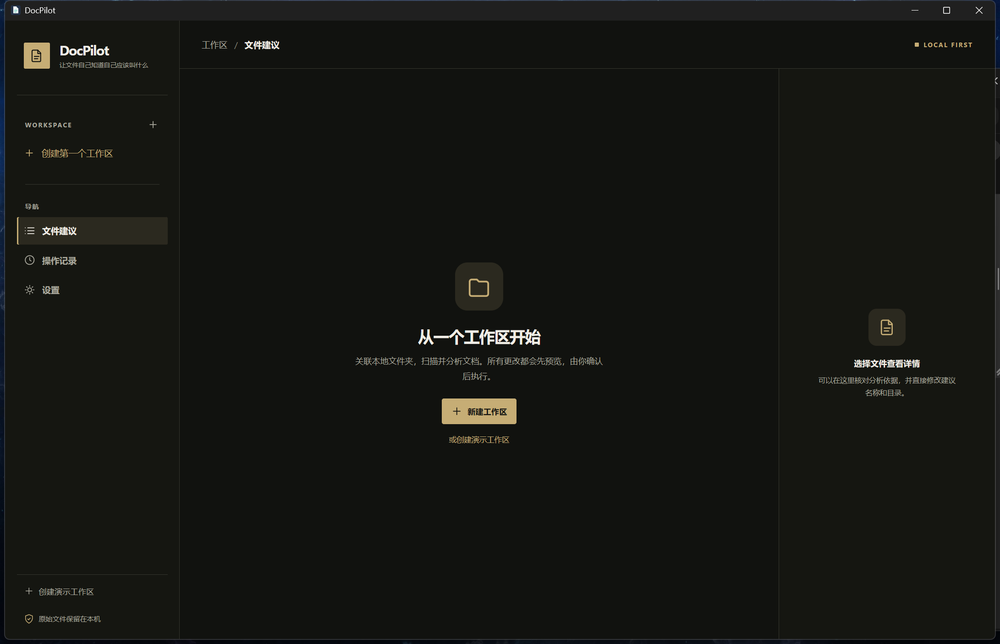

A QUIETER WAY TO ORGANIZE.v0.1 / WINDOWS
DocPilot.
让文件自己知道自己应该叫什么。
读懂文档，提出名称与目录建议。
你逐项核对，预览每一步，再决定何时整理。
Windows 10 / 11 · x64 · 本地处理 · 下载前可在页面底部核对 SHA-256
YOUR FILES. YOUR CALL.
先看清建议。
再动手整理。

GET STARTED / 快速上手
三步，整理有序。
可以先创建演示工作区，了解整个流程。
- 01
关联文件夹
新建工作区，选择本地文件夹。支持 DOCX、文本型 PDF、PPTX、TXT。
- 02
扫描并核对
扫描文件，运行本机规则分析；在右侧查看依据，修改建议名称与目录。
- 03
预览后确认
勾选文件，查看目标路径和冲突。只有明确点击应用，才会改动文件。
TIP 不需要 OpenAI API Key。默认的本机启发式分析可直接使用；云端模型是可选项。
HOW IT WORKS / 工作方式
把决定权，留在手里。
DocPilot 提供建议，也让每次文件操作清晰可见。
- 01 / 内容辅助命名
- 从文档内容与文件名推测项目、用途和版本，生成可编辑建议。
- 02 / 重复文件提示
- 用 SHA-256 标记完全相同的文件，不会自动删除。
- 03 / 安全预览与撤销
- 执行前列出原路径与目标路径，遇到冲突会阻止操作；最后一次整理可尝试撤销。
DETAILS / 兼容与边界
适合你的工作流吗？
SUPPORTED
Windows 本地运行
桌面程序读取你选择的目录。默认分析过程在本机完成，原始文件不会因为扫描而改动。
CURRENT LIMIT
文本型文档
PDF 只提取已有文本，不提供扫描件 OCR。版本和文档类型只是建议，需要人工核对。
需要接入 OpenAI API 吗？
不需要。默认分析使用本机规则，无需联网或 API Key。如果你主动在设置中选择 OpenAI 兼容接口，有限长度的文件名与提取文本片段可能发送给所选模型；原始文件仍保留在本机。
整理会覆盖或删除我的文件吗？
不会自动删除重复文件。应用整理前会再次检查源文件和目标路径；目标已有文件时会报告冲突，不覆盖。
可以撤销整理吗？
可以尝试撤销上一次整理。如果文件内容已改变、路径被占用或权限不足，程序会报告冲突，不强行覆盖。
DOWNLOAD / 开始使用
下载 Windows 安装版
把杂乱的文件，整理成清晰的线索。
DocPilot v0.1 · Windows x64。安装包未进行代码签名。